معالجات اخبارية
3 مليارات شيقل ديون على السلطة.. ماذا جرى في ملف المحروقات؟
تتجه السلطة إلى تأسيس شركة جديدة تابعة لـ”ياسر عباس”، تتولى شراء المحروقات وتخزينها، على أن يقتصر دور هيئة البترول على الإشراف..
تتجه السلطة إلى تأسيس شركة جديدة تابعة لـ”ياسر عباس”، تتولى شراء المحروقات وتخزينها، على أن يقتصر دور هيئة البترول على الإشراف..
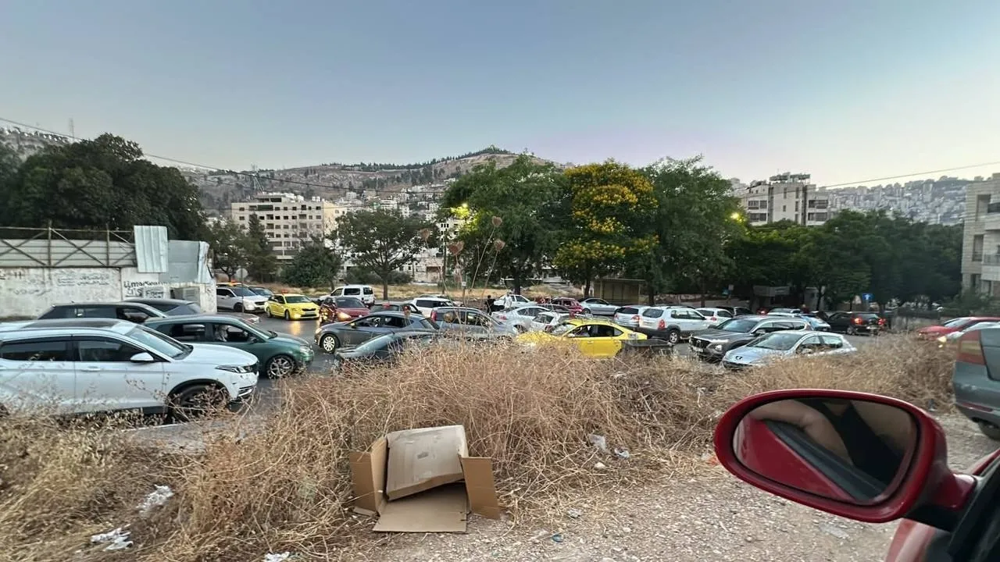
كشفت صحيفة هآرتس العبرية، نقلًا عن تحقيق للجيش الإسرائيلي، أن الجاسوس عبد العزيز الدهيني، شقيق مسؤول المليشيات المتعاونة..
توالت بيانات ومواقف فلسطينية رافضة للحملة الإعلامية التي استهدفت الأمين العام لـالمبادرة الوطنية الفلسطينية مصطفى البرغوثي..
أعلن مدير عام المكتب الإعلامي الحكومي إسماعيل الثوابتة أنه "في خطوة تعكس المسؤولية الوطنية، واستكمالًا لإجراءات نقل إدارة الحكم في قطاع غزة،..
أفادت مصادر فلسطينية مطلعة بأن السلطة الفلسطينية تحركت لدى إحدى الدول الخليجية لاتخاذ إجراءات بحق ناشطين فلسطينيين يقيمان فيه..
وقف إطلاق النار
245
يومًا من الخروقات
قضية تهريب
200
مليون شيقل
قنصل السلطة في دبي
15
يومًا على ذمة التحقيق
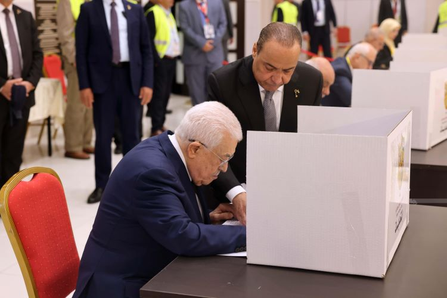
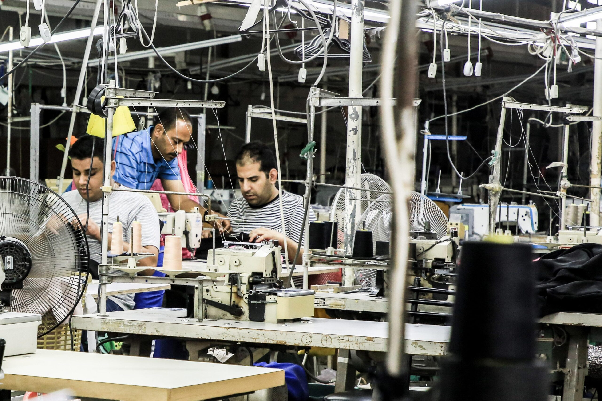
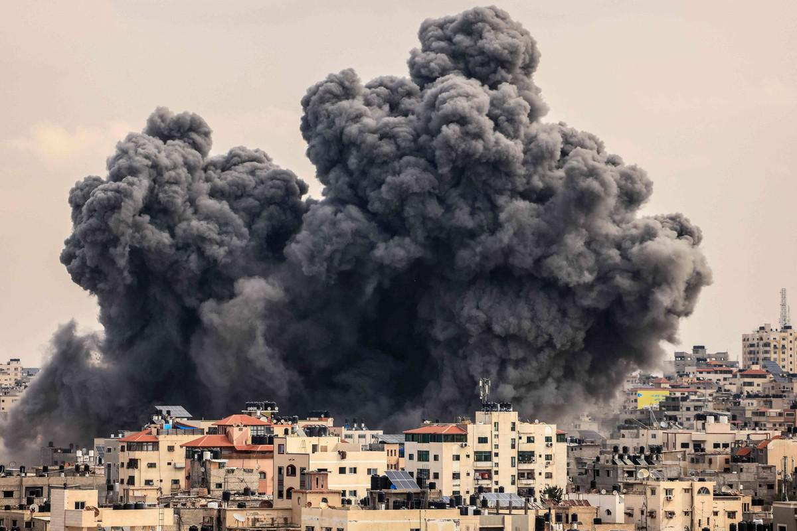
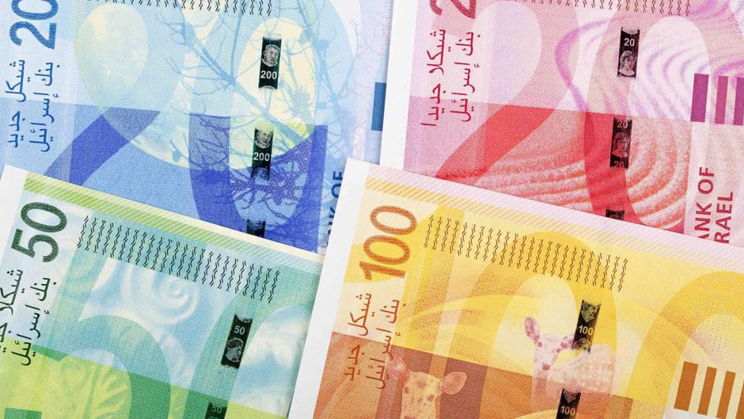
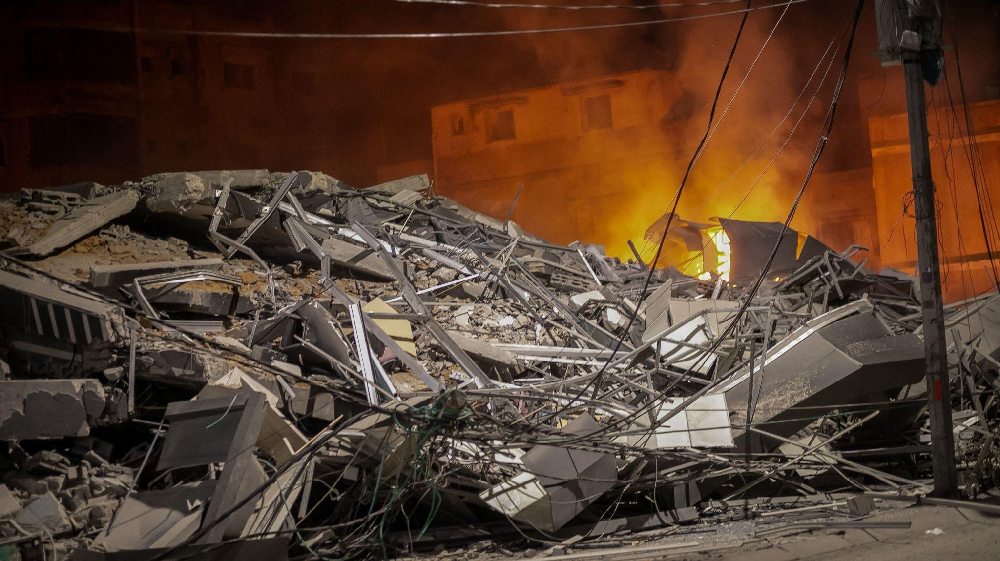
خطر الحراك التخريبي يتطابق مع ظاهرة ميليشيات الاحتلال في تهديد حاضر ومستقبل غزة
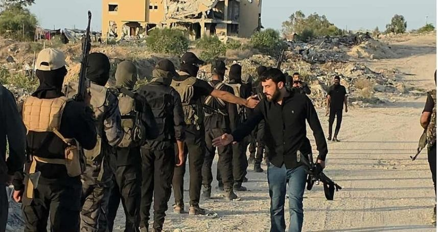
عصمت منصور ينصب نفسه ناطقا باسم الاحتلال بشأن مستقبل قطاع غزة
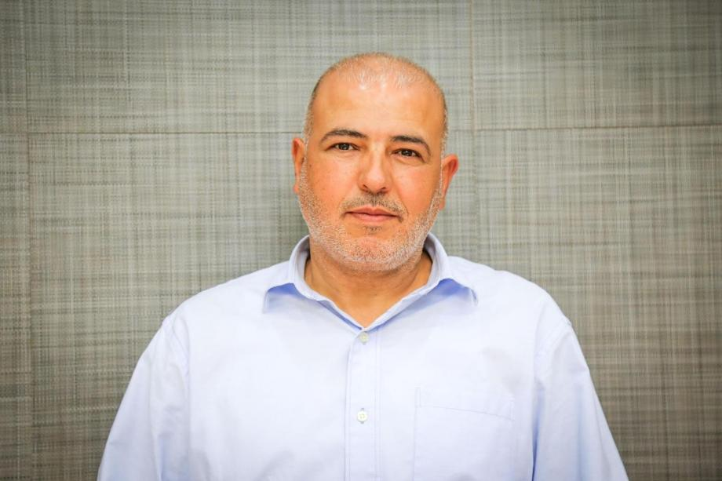
ما وراء تغييرات فتح؟.. اتهامات بالفساد وإقصاء قيادات وتثبيت نفوذ أسماء بارزة
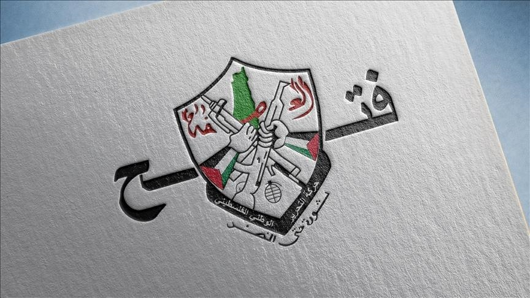
إهمال السلطة الفلسطينية يهدد بانهيار المستشفيات في الضفة الغربية

السفير أشرف دبور يكشف تفاصيل قضية مالية مرتبطة بياسر عباس في لبنان
انقسامات فتح تهدد بتصعيد معركة خلافة عباس بعد مؤتمر الحركة الثامن
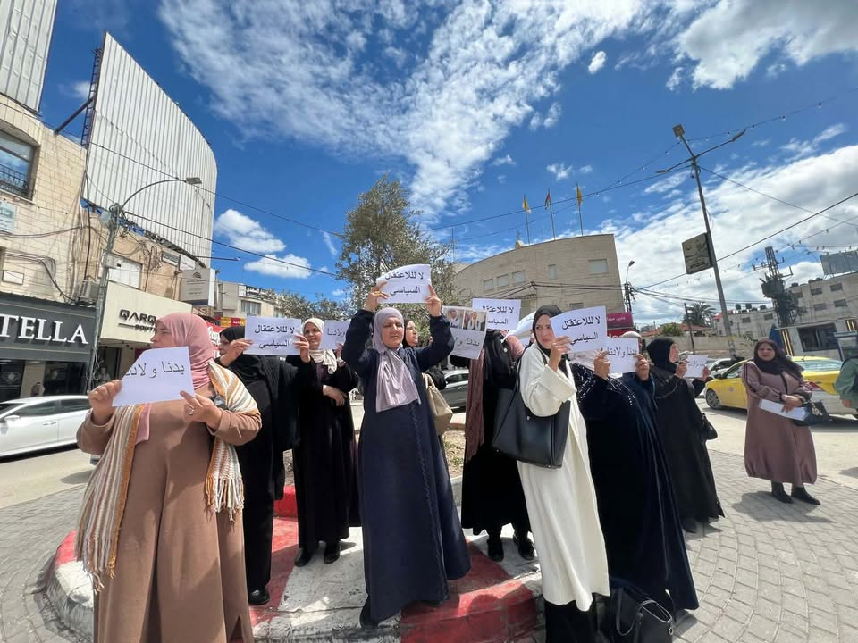
4 صور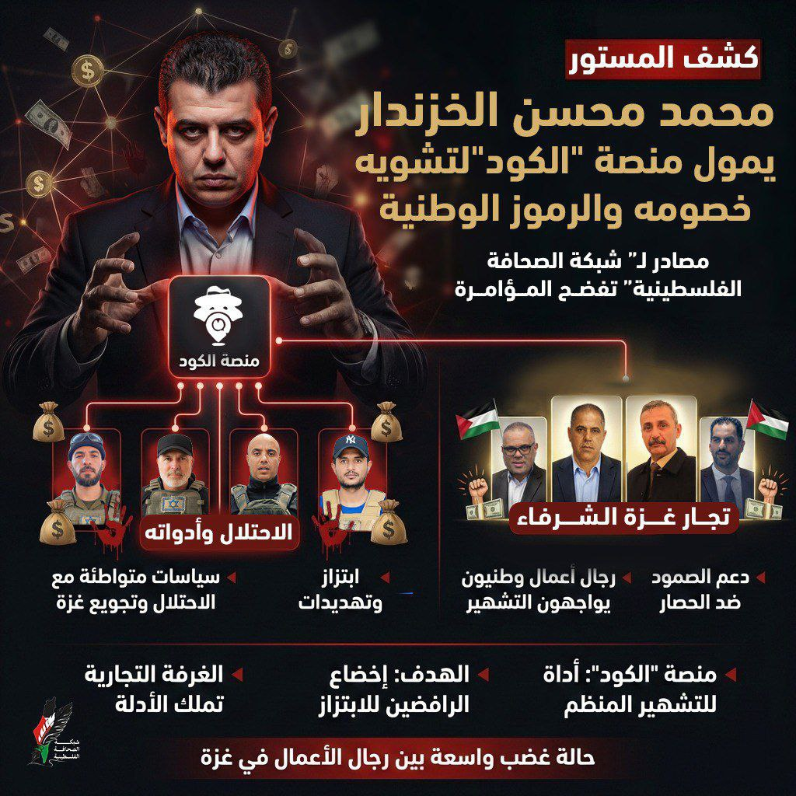
صورتان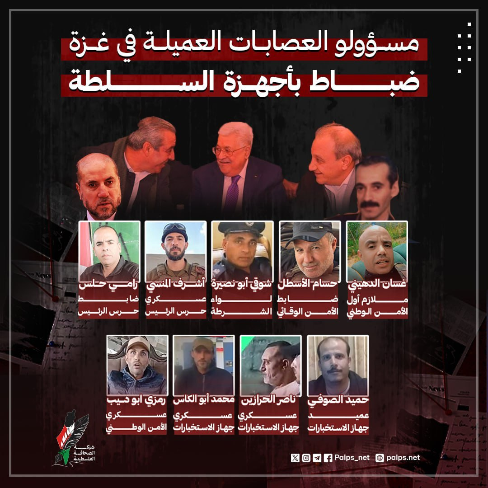
صورتان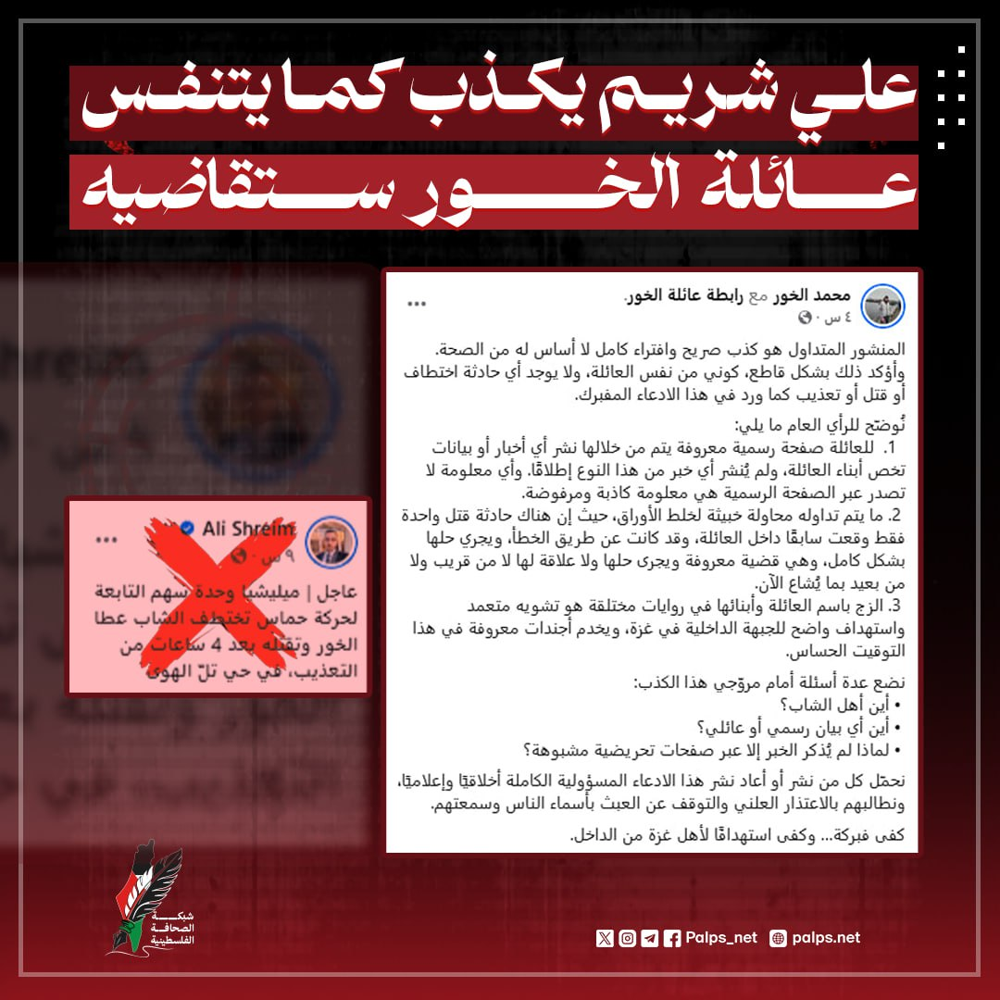
صورتان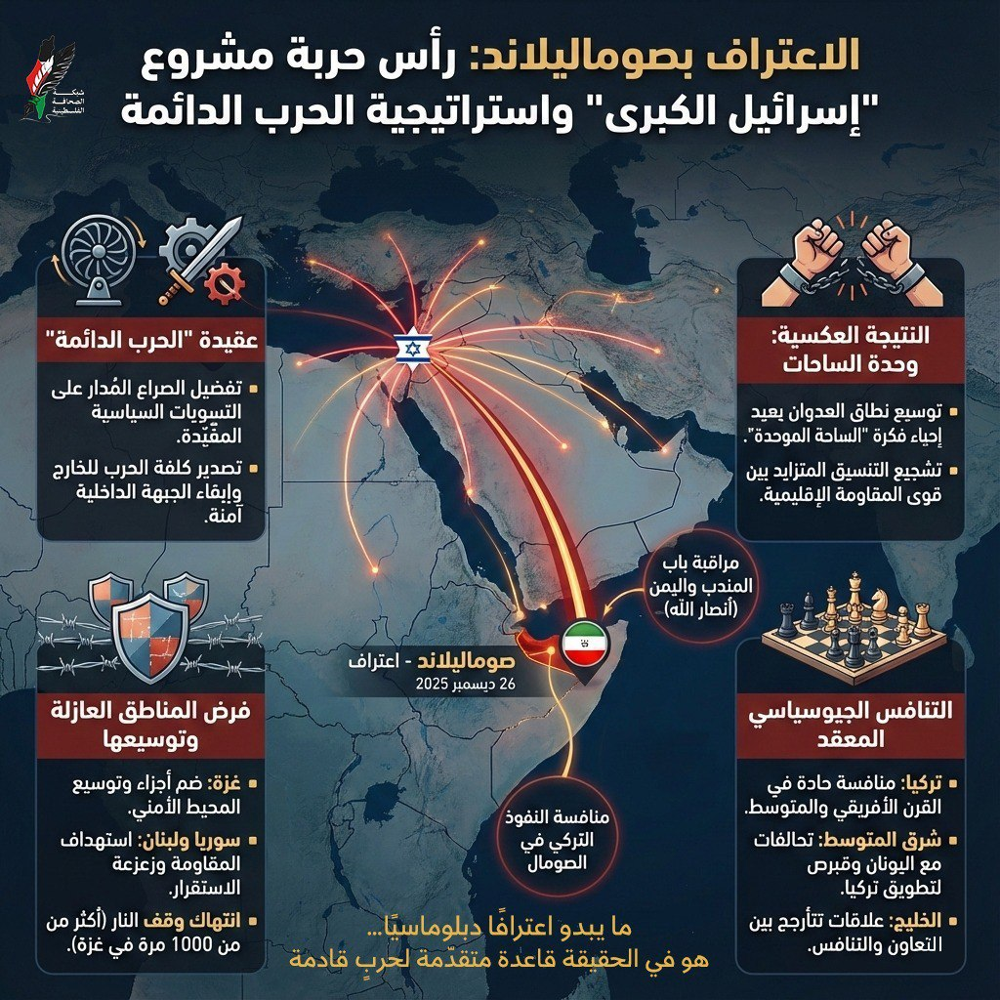
صورتان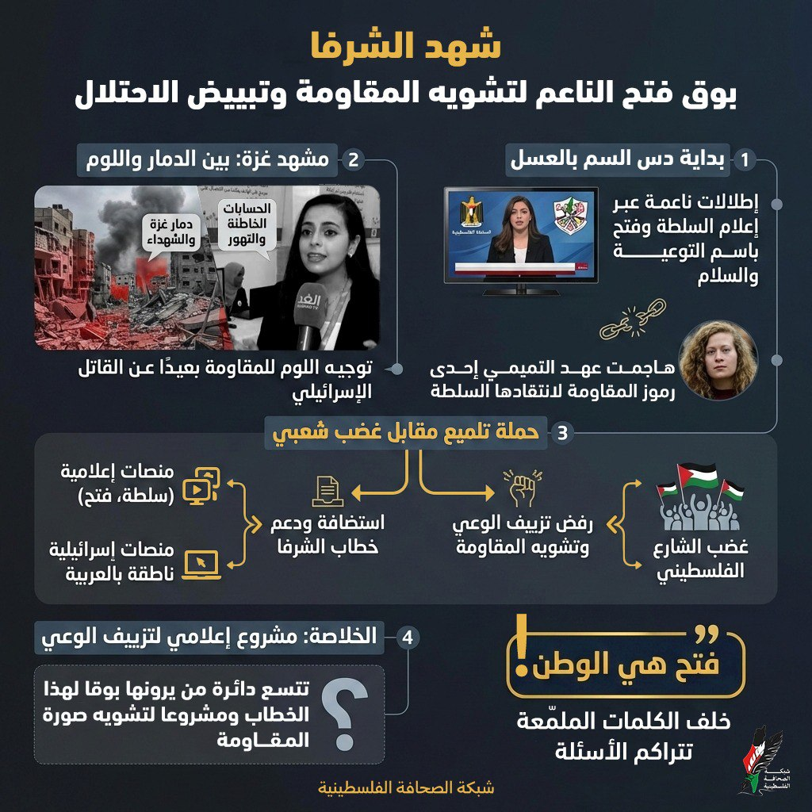
صورتانالمعالجات الاخبارية والتحليلات والقصة في ارقام، كما تنشرها الشبكة.